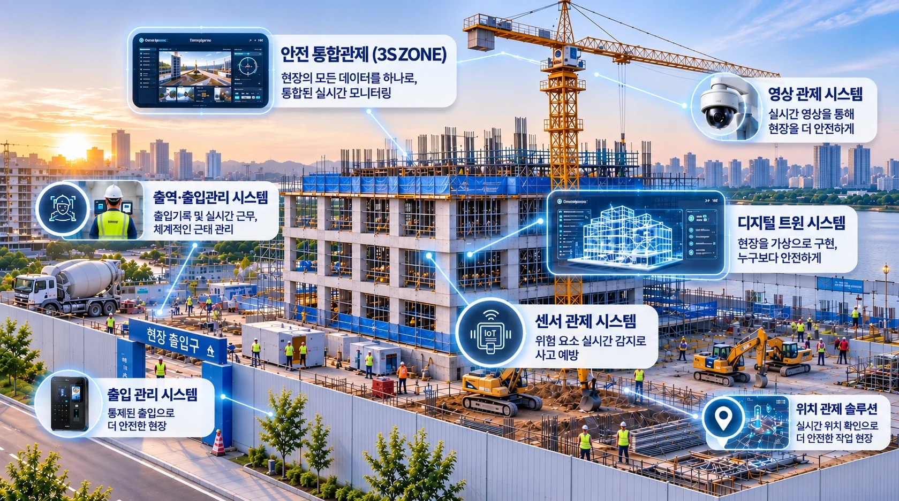

About YCN
회사소개
기획부터 구축, 운영까지
하나의 파트너가 책임집니다
(주)와이씨앤은 출입, 영상, 센서, 위치, AI, 디지털 트윈 기술을
하나의 플랫폼으로 통합한 스마트 안전관리 전문 기업입니다.
축적된 기술과 경험을 바탕으로, 사전에 예측하여 방지할 수 있는
안전관리를 구현합니다.

사람의 순찰과 감독만으로는 한계가 있습니다
산업재해와 중대재해는 매년 반복되고 있으며, 중대재해처벌법 시행 이후 사업주와 경영책임자의 안전보건 확보 의무도 한층 강화되었습니다. 사람의 순찰과 감독만으로는 넓고 복잡한 현장 전체를 상시 살피기 어렵습니다.
이제는 24시간 현장을 모니터링하고 위험을 사전에 경고하는 스마트 안전 체계가 필요합니다.
- 24시간 상시 모니터링
- 위험 사전 경고
- 안전보건 확보 의무 대응
Why YCN
와이씨앤을 선택하는 다섯 가지 이유
현장마다 다른 환경과 위험 요인에 맞춰, 설계부터 설치, 운영, 유지보수까지 직접 수행합니다.
- 원스톱 서비스
설계, 설치, 관리, 운영,
철거까지 하나의 파트너가
책임집니다. - 통합 플랫폼
출입 · 영상 · 센서 · AI ·
위치 데이터를 3SZONE
하나로 관제합니다. - 현장 맞춤 구성
공사 규모와 공정, 공기에
맞춰 필요한 시스템만
조합해 제안합니다. - 검증된 기술력
특허와 디자인 등록,
정보통신공사업 등록,
위치기반서비스사업자 신고
등으로 기술력과 신뢰성을
인정받았습니다. - 전국 운영 체계
전문 인력이 전국 현장의
설치와 A/S 유지보수를
지원합니다.
축적된 기술과 경험을 바탕으로,
사전에 예측하여 방지할 수 있는 안전관리를 구현합니다.
진행 단계
- STEP 01설계
- 현장 실사
- 구축 도면 작성
- 견적
- 확정
- STEP 02설치
- 일정 확정
- 전문 인력 투입
- 전국 운영
- STEP 03관리
- 플랫폼 운영
- 실시간 모니터링
- A/S 유지보수
- STEP 04운영
- 현장별 관제 플랫폼 운영
- 공기별 구축 제안 및 관리
- 현장 철거